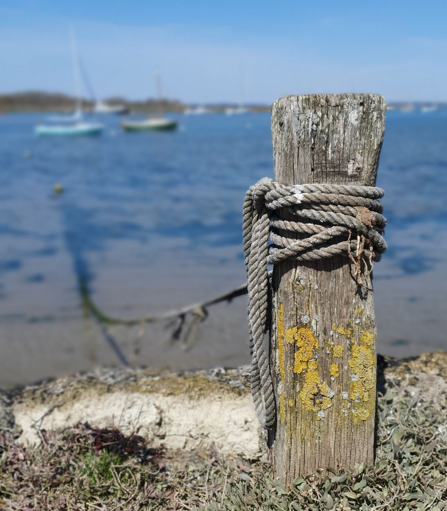

Visitor berths tonight
Enter your boat’s size to see the berths that fit. 22 of 37 visitor spaces are free on Mon 5 October.
Free berths
No free berth fits these sizes tonight. Try the quay wall if your boat can take the ground, or call the marina on Ch 80.
Where the berths are
- Visitor pontoon
- Outer harbour, outside the sill. Afloat at all states of tide. Shore power.
- Marina, pontoon C
- Inner basin, behind the sill. Enter and leave over the sill only. Shore power.
- Fish Quay wall
- Drying berths against the wall. Firm sand over mud. Dries 1.4 m. No shore power.
- Visitor moorings
- Swinging buoys in the outer harbour. Water taxi on Ch 80, 08:00–18:00. No shore power.
